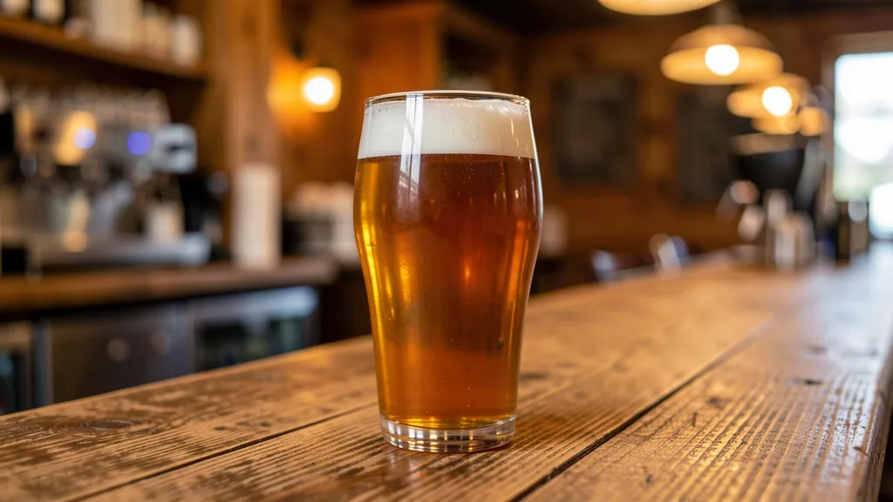

California Craft Beer: San Diego, the Hop Highway & Legendary Breweries
· By GoldenPath Guide Editorial Team
No state shaped the modern American craft beer movement the way California did. From the pioneering brewhouses of the 1980s to the dense, celebrated scenes of today, the Golden State remains the country’s craft beer capital — and tasting your way across it makes for a memorable road trip. The story runs from a single historic San Francisco brewery to a coastal corridor crowded with taprooms, so here is where to go and what to expect. On a warm afternoon, a taproom door stands open to the street, and the bitter-sweet smell of hops drifts out to meet you.
San Diego: America’s Finest City of Beer
San Diego has earned the nickname “America’s finest city” for its sunshine and Pacific coast, but beer lovers know it for something else: the largest craft beer scene in the country. well over 100 breweries operate in San Diego County, and the sheer density is remarkable. Pioneers here helped popularize the bright, aggressively hopped West Coast style, and iconic names like Stone, Ballast Point, Green Flash and Modern Times all trace part of their rise to this county. Tasting rooms range from cavernous industrial warehouses to sun-dappled patios, and most pour a wide flight of IPAs, lagers and barrel-aged rarities. On a pad behind a brewery, glasses sweat in the sea air and the low hum of conversation rolls over the picnic tables.
The Hop Highway
Breweries cluster so tightly along the Hop Highway — a loose stretch of communities in and around San Diego County — that you can visit several in a single afternoon. It is less a formal route than a way of planning: pick a neighborhood, park once, and walk between taprooms. Many spaces serve food, host trivia or music, and welcome families until later in the evening.
- Brewery tours — many breweries offer guided walk-throughs of the brewhouse on weekends.
- Sample flights — order a flight of small pours to taste a brewery's range without overdoing it.
- Food pairings — hoppy IPAs pair well with citrus and spice; stouts and porters love dark chocolate and barbecue.
Santa Rosa: Russian River Brewing
Heading north, Russian River Brewing in Santa Rosa is legendary for its barrel-aged sours and its hop-heavy Pliny the Elder, the year-round double IPA that fans routinely rank among the finest beers brewed anywhere. Its seasonal sibling Pliny the Younger, a triple IPA released each winter, draws lines around the block. The brewery’s downtown pub is a destination in itself, with a lively tap list and a kitchen. Because demand is intense, be prepared to wait during peak weekends — or time your visit for a quieter weekday.
Chico & San Francisco: The Pioneers
Two places anchor the craft beer origin story. In Chico, Sierra Nevada brewed its first test batch in 1980, effectively kickstarting the modern craft movement with a bold, balanced pale ale. The facility offers tours and a well-loved taproom and restaurant. A few hours west, Anchor Brewing in San Francisco was a local institution since the 19th century, celebrated as one of the oldest craft breweries in the country. Anchor ceased operations in July 2023 after 127 years, when owner Sapporo opted to liquidate — but its steam beer and role in the craft revolution still anchor the history. 21st Amendment and Cellarmaker carry the city’s brewing torch today.
San Diego Pioneers Worth Knowing
A little background makes the tasting better. Stone Brewing was founded by Greg Koch and Steve Wagner in 1996, opening in a San Marcos warehouse after the pair met at a UC Davis brewing seminar — its aggressively hopped ales helped define the West Coast style the county is famous for. Ballast Point grew out of a homebrew shop and rode its grapefruit-forward Sculpin IPA to national fame. Knowing the lineage turns a flight into a history lesson: the bitter, pine-and-citrus profile in your glass traces directly to these 1990s pioneers experimenting a short drive from the beach.
Planning a Brewery Road Trip
Because tasting involves alcohol, the practical details matter more than the itinerary.
- Designate a driver or plan to use rideshare between breweries — do not drive after sampling.
- Pace yourself. Flights let you try more with less volume, and pairing food helps.
- Check hours. Tasting rooms, especially the smaller ones, keep varied hours.
The craft beer scene is strongest in spring and autumn, when the taproom patios come alive and release schedules pile up. Summer works too, just expect busier rooms. By evening, the daylight goes long and honeyed over the patio, and the last flight lingers in the cool air.
Tasting-Room Etiquette for First-Timers
A few customs make the visit smoother. Flights before pints — order the small-pour sampler first, then commit to a full glass of the winner. Ask about the seasonal board: limited releases often skip the printed menu, and bartenders pour tasters of anything uncertain. Share the table on busy weekends; communal seating is normal and the conversation is half the point. Eat between stops — most taprooms welcome outside food or run a kitchen, and hops on an empty stomach shorten the day fast. And take crowlers to go: sealed cans of draft-only releases travel well and beat any souvenir glass.